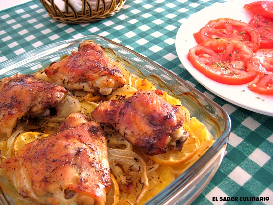
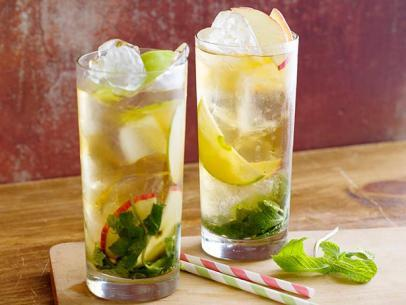

GastroBlog
Tu Blog, Tu Comida


Pollo al limón
Fecha de entrada: Febrero 2 - 2017

El pollo al limon es una receta, facil, comoda y rápida de realizar. Para conseguirlo solo necesitas: Pollo, limon, especias (a tu gusto)
y mantequilla. Lo primero que debes hacer es quitar toda la piel del pollo y dejarlo "abierto". Una vez este listo, debes bañar el pollo en
todo el limon que consideres necesario (recuerda que el secreto de la cocina está en la abundancia de los implementos).
Dejarlo reposar por maximo 2 horas, en temperatura ambiente. Posterior a esto, debes precalentar el horno a 180°C, no olvides untar mantequilla en toda le refractaría, esto evitará que el pollo se pegue. Hornea el pollo por 45 minutos y despues voltea todas las piezas, hornea de nuevo por 45 minutos. Antes de servir asegurate que el pollo este bien cocinado y haz la decoración que se te ocurra. El ultimo y mas importante paso, es DISFRUTAR!
Dejarlo reposar por maximo 2 horas, en temperatura ambiente. Posterior a esto, debes precalentar el horno a 180°C, no olvides untar mantequilla en toda le refractaría, esto evitará que el pollo se pegue. Hornea el pollo por 45 minutos y despues voltea todas las piezas, hornea de nuevo por 45 minutos. Antes de servir asegurate que el pollo este bien cocinado y haz la decoración que se te ocurra. El ultimo y mas importante paso, es DISFRUTAR!

Maria Catalina Azuero
marzo 5 - 2017 14:25pm
Es una receta muy facil!!!! Mi familia quedó muy satisfecha!!!
Alvaro José Benavides
marzo 25 - 2017 18:45pm
La probé y me encantó!!! Ahora hago esta receta una vez a la semana
Mojito CRUSH
Fecha de entrada: Junio 25 - 2017

Como el final del verano se acerca rápidamente, estoy saboreando hasta la última gota de sol y buen tiempo que tenemos. Mañana es el primer día oficial del otoño y estoy protestando con este mojito de menta clásico.
Me encanta la menta y me encantan los mojitos. He tenido mucha práctica para perfeccionar esta bebida. También los hace mi novio, que me los hace de vez en cuando.
Suelo hacer una versión particular un poco diferente de las otras recetas. En lugar de poner directamente el azúcar en el vaso, hago un simple jarabe con azúcar y un poco de agua.
Es una mezcla de azúcar y agua que se calienta a fuego lento. Una vez que el agua está caliente, el azúcar se disuelve. Así no te quedará todo el azúcar en el fondo del vaso, y tu mojito será super dulce.
También me gusta machacar la lima junto con las hojas de menta en lugar de simplemente exprimir el jugo de la lima en el vaso. Extrae mucho más sabor y jugo de la lima como sea posible.
Este sencillo cóctel es muy fácil de hacer. El jarabe es simplemente dar un hervor, machacar la lima y las hojas d menta, añadir el ron y el agua con gas. Hielo picado y ¡a disfrutar!
Maria Catalina Azuero
Julio 10 - 2017 08:13pm
Excelente para la fiesta de anoche!! Gracias por compartir sus recetas!